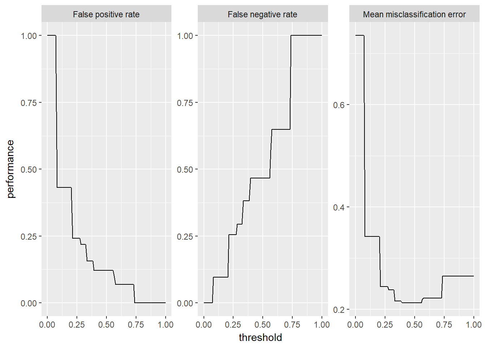
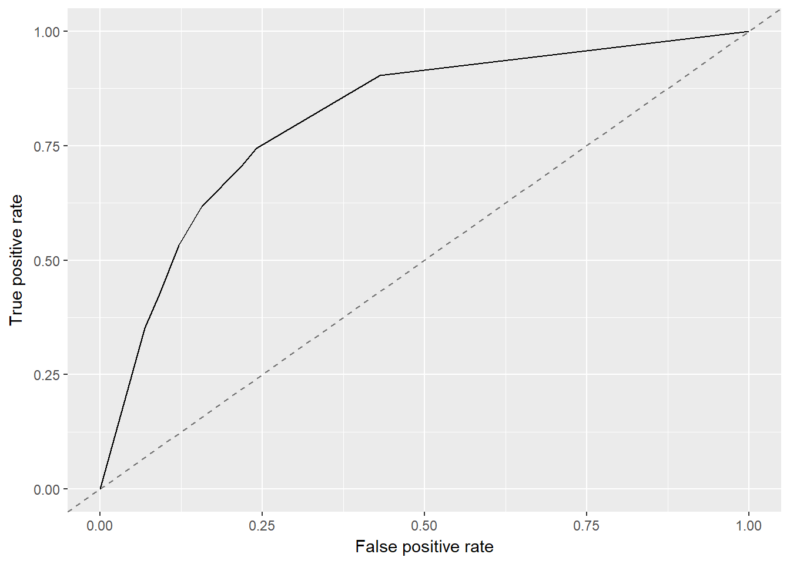
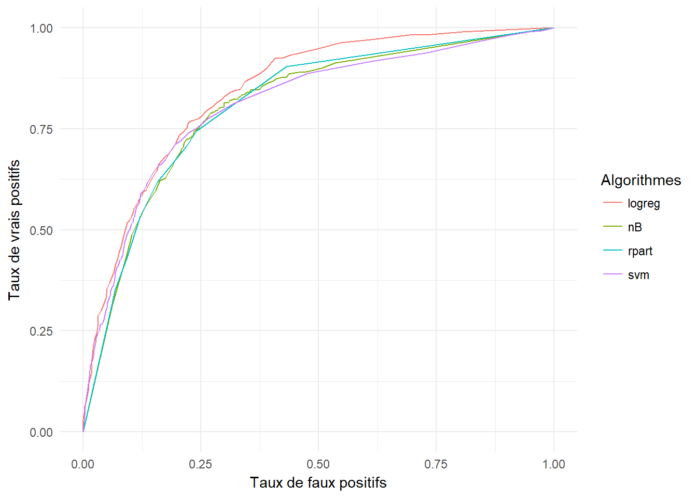
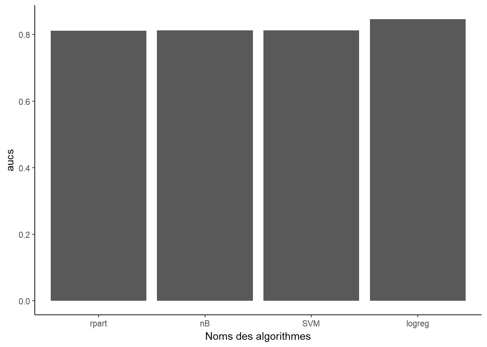

Comme vu précédemment, on doit définir les paramètres suivants pour une tâche de classification:
Quand la tâche de classification est crée, un certain nombre d’informations est analysé:
On peut préciser le type et le type de sortie des algorithmes
La définition des bases d’apprentisage et de test peut aussi être importante, surtout dans le cas où les deux classes ne sont pas équilibrées.
Un algorithme possède plusieurs paramètres et par défaut, ces paramètres sont fixés par le créateur. Selon les données, on peut être amené à modifier ces paramètres (on parle habituellement de tuning d’algorithme).
## Type len Def Constr Req Tunable Trafo
## minsplit integer - 20 1 to Inf - TRUE -
## minbucket integer - - 1 to Inf - TRUE -
## cp numeric - 0.01 0 to 1 - TRUE -
## maxcompete integer - 4 0 to Inf - TRUE -
## maxsurrogate integer - 5 0 to Inf - TRUE -
## usesurrogate discrete - 2 0,1,2 - TRUE -
## surrogatestyle discrete - 0 0,1 - TRUE -
## maxdepth integer - 30 1 to 30 - TRUE -
## xval integer - 10 0 to Inf - FALSE -
## parms untyped - - - - TRUE -On peut obtenir les hyperparamètres:
## $xval
## [1] 0Il est possible de modifier les paramètres.
On peut maintenant créer un modèle de prédiction, avec les données d’apprentissage. On doit préciser les éléments suivants qui ont été définis précédémment:
## Model for learner.id=classif.rpart; learner.class=classif.rpart
## Trained on: task.id = data; obs = 4695; features = 19
## Hyperparameters: xval=0,minsplit=25## [1] "learner" "learner.model" "task.desc" "subset"
## [5] "features" "factor.levels" "time" "dump"## [1] "gender" "SeniorCitizen" "Partner"
## [4] "Dependents" "tenure" "PhoneService"
## [7] "MultipleLines" "InternetService" "OnlineSecurity"
## [10] "OnlineBackup" "DeviceProtection" "TechSupport"
## [13] "StreamingTV" "StreamingMovies" "Contract"
## [16] "PaperlessBilling" "PaymentMethod" "MonthlyCharges"
## [19] "TotalCharges"Quand le modèle prédictif est construit, on peut alors l’appliquer sur de nouvelles observations (base de test) pour avoir les prédictions.
## No Yes -err.- -n-
## No 1516 209 209 1725
## Yes 291 332 291 623
## -err.- 291 209 500 NA
## -n- 1807 541 NA 7043On peut obtenir les probabilités sur les prédictions:
## Prediction: 2348 observations
## predict.type: prob
## threshold: No=0.50,Yes=0.50
## time: 0.01
## id truth prob.No prob.Yes response
## 2 2 No 0.9275976 0.07240244 No
## 4 4 No 0.9275976 0.07240244 No
## 10 10 No 0.9275976 0.07240244 No
## 12 12 No 0.9275976 0.07240244 No
## 16 16 No 0.9275976 0.07240244 No
## 23 23 Yes 0.7205882 0.27941176 No
## ... (2348 rows, 5 cols)Le seuil de décision est fixé par défaut à 50%, et il est possible de modifier.
## predicted
## true No Yes -err.-
## No 1348 377 377
## Yes 183 440 183
## -err.- 183 377 560On peut comparer à la première matrice de confusion
## predicted
## true No Yes -err.-
## No 1516 209 209
## Yes 291 332 291
## -err.- 291 209 500## [1] "kappa" "multiclass.brier" "fn"
## [4] "fp" "multiclass.aunp" "brier.scaled"
## [7] "multiclass.aunu" "bac" "qsr"
## [10] "brier" "tnr" "fdr"
## [13] "gmean" "auc" "tpr"
## [16] "ber" "logloss" "ppv"
## [19] "wkappa" "mcc" "timeboth"
## [22] "timepredict" "acc" "lsr"
## [25] "featperc" "multiclass.au1p" "multiclass.au1u"
## [28] "gpr" "tn" "tp"
## [31] "ssr" "fnr" "f1"
## [34] "fpr" "npv" "timetrain"
## [37] "mmce"## Name: Mean misclassification error
## Performance measure: mmce
## Properties: classif,classif.multi,req.pred,req.truth
## Minimize: TRUE
## Best: 0; Worst: 1
## Aggregated by: test.mean
## Note: Defined as: mean(response != truth)## mmce acc kappa
## 0.2129472 0.7870528 0.4298164
## predicted
## true No Yes
## No 0.88 0.12 tpr: 0.53 fnr: 0.47
## Yes 0.47 0.53 fpr: 0.12 tnr: 0.88
## ppv: 0.61 for: 0.16 lrp: 4.4 acc: 0.79
## fdr: 0.39 npv: 0.84 lrm: 0.53 dor: 8.28
On peut afficher le coefficient AUC.
## auc
## 0.8109833
